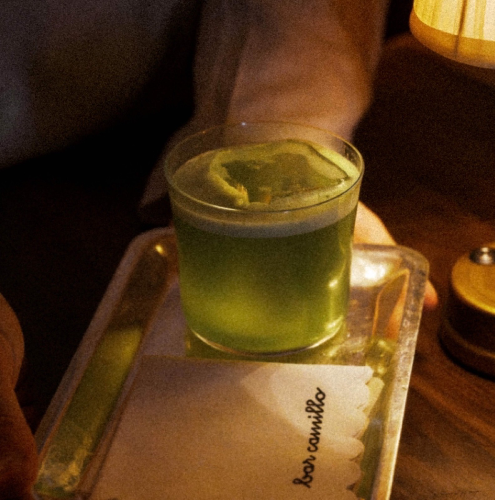
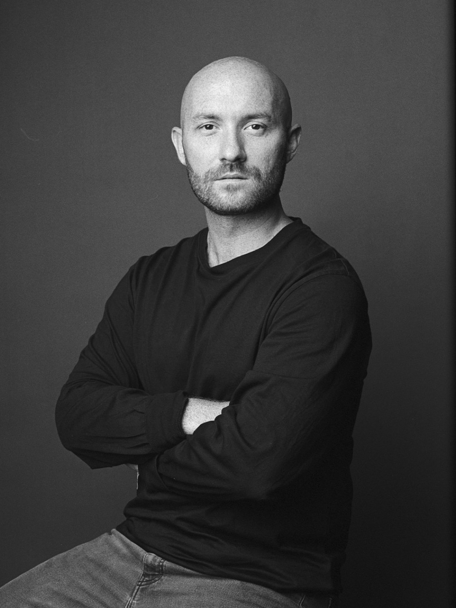

10 月 21 日，香港瑰丽酒店宣布了一件事：请 Bar Leone 的两位创始人 Lorenzo Antinori 和 Justin Shun Wah 进驻，开一间新酒吧，叫 Bar Camillo，11 月 25 日开业。
这件事的看点不在「酒店开了家新酒吧」。酒店开酒吧太常见了。看点在于两串排名：香港瑰丽，The 50 Best Hotels 2025 和 2026 连续两年世界第一；Bar Leone，The 50 Best Bars 2025 和 2026 连续两年世界第一。两个榜单各自的第一，决定合住一个屋檐。

01｜先说清楚「第一」的含金量
The 50 Best 的两个榜单都由行业投票产生，一年一届。香港瑰丽 2019 年开业，413 间房面朝维多利亚港，楼里还有一家米其林粤菜、一家米其林印度菜和一家全球排名前列的酒吧 DarkSide。它拿第一靠的不是新，是把大体量酒店做出小酒店的服务颗粒度。
Bar Leone 更夸张。这间中环小店连年压过伦敦、纽约、巴黎的所有对手，靠的是 Antinori 那套「鸡尾酒平民主义」：不设低消的门槛感，街坊店的松弛，配世界级的出品。
现在这两套方法论要叠在一起。问题是：酒店酒吧的拘谨，和街坊酒吧的松弛，能共存吗？
02｜这间酒吧不想像酒吧
答案藏在概念里。Bar Camillo 的原型不是 bar，是意大利语的 salotto，客厅。意大利人待客的中心不在餐厅，在客厅，酒是配角，聊天才是正事。

落到设计上：亮面木饰板、抛光金属、镜面墙，金色和雪松绿压着奶油底色，整套上世纪中叶意大利客厅的语法。长卡座沿吧台铺开，往里走是低矮座位和包起来的角落，再往外，露台。室内加露台一共 50 个座位。
50 个座位是什么概念？香港瑰丽有 413 间房、11 家餐厅酒吧。新酒吧只占其中很小一角，这个体量分配本身就说明了定位：它不做酒店的配套，它要做目的地本身。
顺带一提，它接替的是 9 月 20 日结业的女士酒吧 XX，带海景露台的那个位置。截至发稿，酒店没有发布任何内景照片。第一批空间实拍，可能要等开业。
03｜Negroni 不是一款酒，是一套仪式
酒单分三段，名字全是意大利文。Aperitivi di Benvenuto 是开场，清爽低酒精；Cocktail della Casa 是主场，经典为底随季节改；Playful Party Touches 负责收尾的放纵。整份酒单一季换一次，每一季围绕一个特定年份展开，那个年代的意大利流行乐、墙上的海报、杯中的配方，全部对齐。
真正的主角是 Negroni。入座后你会收到一张小卡片，自己选基酒、选装饰、选风味走向，从花香到咸鲜到醇厚。然后一辆定制的 Negroni 推车被推到桌边，调酒师当着你的面，按你的选择现调。

还有一项 Negroni Sospeso，「待用咖啡」的鸡尾酒版本：你可以多付一杯，留给下一位不相识的客人。这是意大利的老传统，被原样搬进了五星级酒店。
04｜主理人的底气
Antinori 的履历值得看一眼：伦敦 Savoy Grill 起步，进了如日中天的 Dandelyan，后来在首尔四季做 Charles H.，回香港做 Argo，然后出去开了 Bar Leone。他是罗马人，这次算把家乡的客厅搬进了全球排名第一的酒店。
酒吧的名字来自吉祥物 Camillo，一个有点调皮、有点笨拙、越到晚上越兴奋的调酒师形象，绣在制服和杯垫上。他代表一个意大利词：padroni di casa，主人家的意思。Antinori 的原话是，好的调酒师要对客人的娱乐负责，把一整晚推向高潮。
翻译成人话：在这里，你不需要懂酒，也不需要拘谨。主人会照顾其余的一切。
05｜为什么值得记下来
过去酒店拿世界第一，是为了公关通稿。这次不一样：香港瑰丽把排名换成了人，把品牌资产换成了可以直接卖座位的产品。榜单第一不再只是荣誉，是招商筹码。
这个动作如果跑通，你会看到更多「第一请第一」。而 hotel bar 这个几百年的品类，可能终于要摆脱「大堂旁边放架钢琴」的默认设定。
11 月 1 日起开放订位。我们在排第一晚的位子。
- 开业：2026 年 11 月 25 日
- 订位：11 月 1 日起开放
- 时间：周二至周日 17:00 起，周一休息；周中至午夜，周五周六至凌晨 1 点
- 位置：香港瑰丽酒店，尖沙咀梳士巴利道 18 号
- 着装：smart casual，拖鞋和运动装免进
两个世界第一合开一间酒吧，你押它会变成下一个订不到的 Bar Leone，还是又一个漂亮的酒店酒吧？我押前者。你们呢？
curiohood · Stay Curious
事实核对：开业日期 2026 年 11 月 25 日、11 月 1 日起订位、营业时间与着装要求，据 Rosewood Hong Kong 新闻稿（2026 年 10 月 21 日）及 La Revue des Hôtels 报道；香港瑰丽连续两年位居 The 50 Best Hotels 第一、Bar Leone 连续两年位居 The 50 Best Bars 第一，据 The 50 Best 官方榜单；50 个座位、三段式酒单、每季更换、Negroni 推车与 Negroni Sospeso，据酒店新闻稿及 Bar Magazine 报道；选址接替 9 月 20 日结业的 XX 酒吧，据 Time Out Hong Kong 报道。内景照片截至 2026 年 10 月 26 日尚未发布。